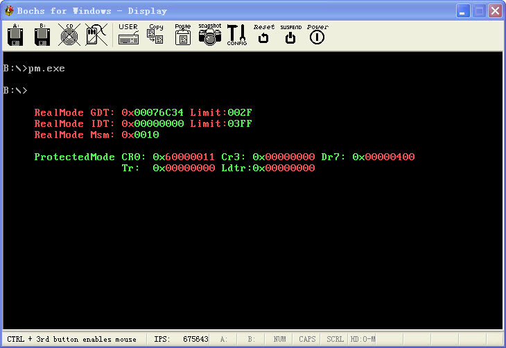

保护模式9:特权指令的演示
文章目录
在Intel的386CPU中, 增加了一系列的指令用于支持保护模式的操作, 前面的代码其实我们已经使用了不少, 另外还有些针对段描述符的指令也是非常有用的..
由于大部分人不会写自己的操作系统, 所以一般也比较少使用特权指令, 甚至有一部分在3环可以使用的指令也并不了解, 不过话说回来, 类似于sgdt, sidt这样的指令, 就算是获取到了这些值也们没有什么用. 所以对这些指令也就比较陌生了..
但是对于写保护模式程序来说, 很多指令是非常有用的, 类似lsl(装载段界限)就非常好用, 如果自己使用mov指令那么就比较麻烦了.. 所以遇到这种指令也不用去记, 当需要使用的时候, 当很麻烦的时候自然就会想起这种指令的..
这一篇估计是保护模式里面最轻松的一篇, 除了介绍一点常用的指令, 没有做任何事情. 唯一的亮点是从16位保护模式段跳入32位保护模式段, 然后在32位保护模式段中返回. 前面我们写代码在这种地方一般是使用Jmp, 这里使用了CALL.
用CALL指令也不是不可以, 只是在返回的时候需要自己修正堆栈中的CS:IP, 因为16位的段压栈是压16位值. 而32位返回的时候需要堆栈的信息是32位的, 所以需要自己手动修正. 前面关于这个问题我做了不少的实验, 一直都没有成功, 不过随着现在保护模式的代码敲得多了, 对保护模式有了一些感觉了.
我说说这个代码的逻辑功能, 首先在实模式下初始化一些该初始化的东西, 显示了实模式下的GDT, IDT, 然后跳入保护模式, 用于从实模式跳入保护模式的段, 一般是使用16位段的, 用于作为缓冲段, 因为无法从32位段中返回实模式,然后我们从保护模式的16位段跳入保护模式的32位段, 这里使用的时CALL指令, 以前一直没有使用这个方法, 需要注意下, 不过正常来说,对于这种16-32这种跨度的段还是使用Jmp会好点.
跳入保护模式以后, 演示了一些只有在保护模式才能够使用的特权指令, 包括str,sldt, cr0, cr3, dr7什么的, 这些都只能在保护模式下使用的指令.. 然后还使用了类似于arpl, verr这些指令, 都是非常有用的, 也非常简单, 跟着代码的注释我想很容易就弄懂了..
做完这些事情, 然后就ret从32位代码段返回到16位代码段, 然后退回实模式.还是和以前一样, 有图有真相..
http://www.joenchen.com/JoenTools/Priviin.rar

;============================================================================ ;演示特权指令的使用 ;MASM9 + LINK5 ;编译选项请参见 makefile TAB = 8 ;============================================================================ .686p Include pm.inc option casemap:none Stack_Len equ 1024 ;堆栈大小 ;============================================================================ GdtSeg Segment use32 ;全局描述符 ; ;段基址 ;段界限 ;属性 Dummy: Descriptor 0, 0, 0 ;空的描述符 Normal: Descriptor 0, 0ffffh, DA_DRW ;规范段描述符 g_CodeTempDesc: Descriptor 0, 0ffffh, DA_C ;非一致代码 g_StackDesc: Descriptor 0, Stack_Len-1, DA_DRW or 4000h ;32位堆栈段 g_DataDesc: Descriptor 0, 0fffffh, DA_DRWG ;全局4G数据段 g_DemoCodeDesc: Descriptor 0, DemoCodeSegLen-1, DA_C or DA_32 ;32位演示代码段描述符 g_VideoDesc: Descriptor 0b8000h,0ffffh, DA_DRW ;全局视频操作段
g_TestDesc: Descriptor 1111h, 0ffffh, DA_DRW ;测试描述符
;—————————————————————————- NormalSelector equ Normal - GdtSeg ;规范段选择子 g_DataSelector equ g_DataDesc - GdtSeg ;全局数据段 g_VideoSelector equ g_VideoDesc - GdtSeg ;全局视频段选择子 g_DemoCodeSelector equ g_DemoCodeDesc - GdtSeg ;演示代码段选择子 g_StackSelector equ g_StackDesc - GdtSeg ;0环堆栈段 g_CodeTempSelector equ g_CodeTempDesc - GdtSeg ;代码段选择子
g_TestSelector equ g_TestDesc - GdtSeg ;测试选择子 g_TestRSelector equ g_TestDesc - GdtSeg + SA_RPL3 ;测试选择子 ;—————————————————————————- GDTLen equ $ - GdtSeg ;GDT长度 _RegSp word ? ;用于保存SS:SP _RegSs word ? ;—————————————————————————- SzGdtMsg byte “RealMode GDT: 0x” SzIdtMsg byte “RealMode IDT: 0x” SzMswMsg byte “RealMode Msm: 0x” SzCr0Msg byte “ProtectedMode CR0: 0x” SzCr3Msg byte 0,“Cr3: 0x” SzDr7Msg byte 0,“Dr7: 0x” SzTrMsg byte “Tr: 0x” SzLdtrMsg byte " Ldtr:0x" SzLimitMsg byte 0, “Limit:” GdtSeg Ends ;============================================================================ Stack0Seg Segment use32 byte Stack_Len dup(?) Stack0Seg Ends ;============================================================================ g_DemoCodeSeg Segment use32 ;演示代码段 ;============================================================================ ;换行, _dwValue传递当前的行列号, 计算好在Eax中返回下一行开始 PrintLn Proc uses ebx _dwValue:dword mov eax, _dwValue mov bl, 160 div bl and eax, 0FFh inc eax mov bl, 160 mul bl ret PrintLn Endp ;============================================================================ ;;将al中的数字转成ASCII加上显示属性并在EAX中返回 HexToAscii Proc uses ebx
mov bl, al
and al, 0fh
add al, 90h
daa
adc al, 40h
daa
mov ah, 0ch
shl eax, 16 ;转换低位
mov al, bl
shr al, 4
and al, 0fh
add al, 90h
daa
adc al, 40h ;将高位转成ASCII
daa
mov ah, 0ch ;属性
ret
HexToAscii Endp ;—————————————————————————- ;es:si–>字符串返回缓冲区, eax要转换的dword DwordToHex Proc uses ebx ;dword转成字符串,
mov ebx, eax
shr eax, 16 + 8
call HexToAscii
stosd
mov eax, ebx
shr eax, 16
call HexToAscii
stosd
mov eax, ebx
shr eax, 8
call HexToAscii
stosd
mov eax, ebx
call HexToAscii
stosd
ret
DwordToHex Endp ;============================================================================ ;ds->si要显示的字符串, es->di要显示的位置 ShowMsg Proc ;显示信息到屏幕上 @@: lodsb mov ah, 0ah stosw loop @b ret ShowMsg Endp ;============================================================================ ;显示控制寄存器值 ShowControlReg Proc local _lpRealAddress:dword local wBuf:word
;—————————————————————————- ;实模式下的字符串地址, 换算成保护模式下的, 方法 ;—————————————————————————- mov esi, GdtSeg shl esi, 4 mov _lpRealAddress, esi ;—————————————————————————- lea esi, SzCr0Msg add esi, _lpRealAddress mov ecx, sizeof SzCr0Msg call ShowMsg
mov eax, cr0
call DwordToHex ;显示cr0
;—————————————————————————- lea esi, SzCr3Msg add esi, _lpRealAddress mov ecx, sizeof SzCr3Msg call ShowMsg
mov eax, cr3 ;显示CR3
call DwordToHex
;—————————————————————————- lea esi, SzDr7Msg add esi, _lpRealAddress mov ecx, sizeof SzDr7Msg call ShowMsg
mov eax, dr7 ;调试寄存器dr7
call DwordToHex
;—————————————————————————- Invoke PrintLn, edi mov edi,eax add edi, (5+14) * 2 ;换行
lea esi, SzTrMsg
add esi, \_lpRealAddress
mov ecx, sizeof SzTrMsg
call ShowMsg
str word ptr ss:\[wBuf\]
movzx eax, word ptr ss:\[wBuf\] ;Tr寄存器
call DwordToHex
;—————————————————————————- lea esi, SzLdtrMsg add esi, _lpRealAddress mov ecx, sizeof SzLdtrMsg call ShowMsg
sldt word ptr ss:\[wBuf\]
movzx eax, word ptr ss:\[wBuf\] ;LDTR寄存器
call DwordToHex
;—————————————————————————- ret ShowControlReg Endp ;—————————————————————————- _DemoEntry equ $ - g_DemoCodeSeg DemoEntry Proc far
mov edi, 9 \* 80 \* 2 + 5 \* 2 ;9行5列
Invoke ShowControlReg
;—————————————————————————- ;测试调整申请特权级指令 mov ax, g_TestSelector mov dx, g_TestRSelector arpl ax, dx ;if (ax)rpl < (cx)rpl (ax)rpl = (cx)rpl ;—————————————————————————- ;装载描述符的界限 mov bx, 0 mov ax, g_TestSelector xor edx, edx xor cx, cx
lsl edx, eax ;将opera2的选择子指向的界限装入
lsl cx, ax
;—————————————————————————- ;装载描述符的属性字段 xor edx, edx xor cx, cx lar edx, eax lar cx, ax ;—————————————————————————- ;测试选择子指向的段是否可读 verr ax jnz @f ;描述符是可读的 @@: ;—————————————————————————- ;测试选择子指向的段是否可写 verw ax jnz @f ;描述符是可写的 @@: ;—————————————————————————- ;由于是从16位代码段跳转过来的, 压栈都是16位的, 这里是32位代码段, 所以 ;必须扩展返回地址, 才能够正常的返回 ;—————————————————————————- pop ax ;ip pop cx ;cs movzx ecx, cx movzx eax, ax push ecx ;cs push eax ;eip ret DemoEntry Endp DemoCodeSegLen equ $ - g_DemoCodeSeg g_DemoCodeSeg Ends ;============================================================================ ;16位段, 由实模式跳入 ;============================================================================ g_Code16Seg Segment use16 _GoToProtect Proc ;返回实模式 mov ax, NormalSelector mov fs, ax ;规范选择子 mov es, ax mov ds, ax mov ss, ax mov gs, ax
mov eax, cr0 ;关PE位, 进入实模式
and al, 0feh
mov cr0, eax
;刷新段选择子缓冲区, 退回实模式
Jmp16 <seg StartCodeSeg >, < offset \_RealProtect >
_GoToProtect Endp ;—————————————————————————- _ProtectEntry Proc ;实模式跳入入口
mov ax, g\_StackSelector
mov ss, ax
mov esp, Stack\_Len ;设置堆栈
mov ax, g\_DataSelector ;设置源数据段
mov ds, ax
mov ax, g\_VideoSelector
mov es, ax ;设置目标ES
;—————————————————————————- ;这个比较给力, 从16位代码段跳转到32位代码段 CALL16 <g_DemoCodeSelector>, _DemoEntry ;演示特权指令 ;—————————————————————————- call _GoToProtect ;返回保护模式 _ProtectEntry Endp g_Code16Seg Ends ;============================================================================ StartCodeSeg Segment use16 ;实模式启动代码 _InitGdt Proc uses es ;初始化全局描述符表 local _fGdtPtr:fword
xor eax, eax
mov ax, GdtSeg
mov es, ax ;es-->全局描述符表
;—————————————————————————- shl eax, 4 mov dword ptr es:[_fGdtPtr+2], eax ;初始化VGDT描述符 mov word ptr es:[_fGdtPtr], GDTLen-1 ;GDT长度 ;—————————————————————————- xor eax, eax mov ax, g_Code16Seg ;初始化十六位的代码段 shl eax, 4 mov word ptr es:[g_CodeTempDesc+2], ax ;段基址低位 shr eax, 16 mov byte ptr es:[g_CodeTempDesc+4], al ;段基址高地址低位 mov byte ptr es:[g_CodeTempDesc+7], ah ;段基址高地址高位 ;—————————————————————————- xor eax, eax mov ax, g_DemoCodeSeg ;初始化32位的演示代码段 shl eax, 4 mov word ptr es:[g_DemoCodeDesc+2], ax shr eax, 16 mov byte ptr es:[g_DemoCodeDesc+4], al mov byte ptr es:[g_DemoCodeDesc+7], ah ;—————————————————————————- xor eax, eax mov ax, Stack0Seg ;初始化32位的演示堆栈 shl eax, 4 mov word ptr es:[g_StackDesc+2], ax shr eax, 16 mov byte ptr es:[g_StackDesc+4], al mov byte ptr es:[g_StackDesc+7], ah ;—————————————————————————- lgdt fword ptr ss:[_fGdtPtr] ;装载GDT ret _InitGdt Endp ;============================================================================ ;;将al中的数字转成ASCII加上显示属性并在EAX中返回 _HexToAscii Proc uses ebx
mov bl, al
and al, 0fh
add al, 90h
daa
adc al, 40h
daa
mov ah, 0ah
shl eax, 16 ;转换低位
mov al, bl
shr al, 4
and al, 0fh
add al, 90h
daa
adc al, 40h ;将高位转成ASCII
daa
mov ah, 0ah ;属性
ret
_HexToAscii Endp ;—————————————————————————- ;es:si–>字符串返回缓冲区, eax要转换的dword _DwordToHex Proc uses ebx ;dword转成字符串,
mov ebx, eax
shr eax, 16 + 8
call \_HexToAscii
stosd
mov eax, ebx
shr eax, 16
call \_HexToAscii
stosd
mov eax, ebx
shr eax, 8
call \_HexToAscii
stosd
mov eax, ebx
call \_HexToAscii
stosd
ret
_DwordToHex Endp ;—————————————————————————- ;es:di–>字符串写入的缓冲区, ax要转换的word _WordToHex Proc uses bx mov bx, ax shr ax, 8 call _HexToAscii stosd mov ax, bx call _HexToAscii stosd ret _WordToHex Endp ;============================================================================ ;换行, _dwValue传递当前的行列号, 计算好在Eax中返回下一行开始 _PrintLn Proc uses ebx _dwValue:dword mov eax, _dwValue mov bl, 160 div bl and eax, 0FFh inc eax mov bl, 160 mul bl ret _PrintLn Endp ;============================================================================ ;ds->si要显示的字符串, es->di要显示的位置 _ShowMsg Proc ;显示信息到屏幕上 @@: lodsb mov ah, 0ch stosw loop @b ret _ShowMsg Endp ;============================================================================ _ShowRegister Proc uses es ds ;演示实模式下可以使用的特权指令 local _fRegBuf:fword local _wBuf:word
sgdt fword ptr ss:\[\_fRegBuf\] ;读取实模式下的GDT
mov edi, 80 \* 2 \* 5 + 5 \* 2 ;5行5列
mov ax, 0b800h
mov es, ax
cld
;—————————————————————————- ;显示GDT mov ax, GdtSeg mov ds, ax lea si, SzGdtMsg mov cx, sizeof SzGdtMsg call _ShowMsg
mov eax, dword ptr ss:\[\_fRegBuf+2\]
call \_DwordToHex ;显示GDT基址
lea si, SzLimitMsg
mov cx, sizeof SzLimitMsg
call \_ShowMsg
mov ax, word ptr ss:\[\_fRegBuf\]
call \_WordToHex ;显示GDT限长
;—————————————————————————- Invoke _PrintLn, edi ;换行 mov edi, eax add edi, 5 * 2
;显示IDT
sidt fword ptr ss:\[\_fRegBuf\] ;读取实模式下的IDT
lea si, SzIdtMsg
mov cx, sizeof SzIdtMsg
call \_ShowMsg
mov eax, dword ptr ss:\[\_fRegBuf+2\]
call \_DwordToHex ;显示GDT基址
lea si, SzLimitMsg
mov cx, sizeof SzLimitMsg
call \_ShowMsg
mov ax, word ptr ss:\[\_fRegBuf\]
call \_WordToHex ;显示GDT限长
;—————————————————————————- smsw word ptr [_wBuf] ;显示CR0的低16位
Invoke \_PrintLn, edi ;换行
mov edi, eax
add edi, 5 \* 2
lea si, SzMswMsg
mov cx, sizeof SzMswMsg
call \_ShowMsg
mov ax, word ptr ss:\[\_wBuf\]
call \_WordToHex ;显示MSW
;—————————————————————————- ret _ShowRegister Endp ;============================================================================ Jmain Proc ;启动入口 call _ShowRegister ;显示实模式的关键寄存器 call _InitGdt ;初始化GDT全局描述符 ;—————————————————————————- mov ax, GdtSeg mov ds, ax
mov ds:\[\_RegSs\], ss
mov ds:\[\_RegSp\], sp ;保存SS:SP
\_EnableA20 ;关中断开A20地址线
mov eax, cr0
or eax, 1
mov cr0, eax ;开启分段, 进入保护模式
;—————————————————————————- Jmp16 g_CodeTempSelector, <offset _ProtectEntry>;跳入保护模式
Jmain Endp ;—————————————————————————- _RealProtect Proc ;返回保护模式
mov ax, GdtSeg
mov ds, ax
lss sp, dword ptr ds:\[\_RegSp\] ;恢复SS:SP
\_DisableA20 ;关A20地址线, 开中断
sti
mov ax, 4c00h
int 21h
_RealProtect Endp StartCodeSeg Ends End Jmain
文章作者 忆杰
上次更新 2011-09-25